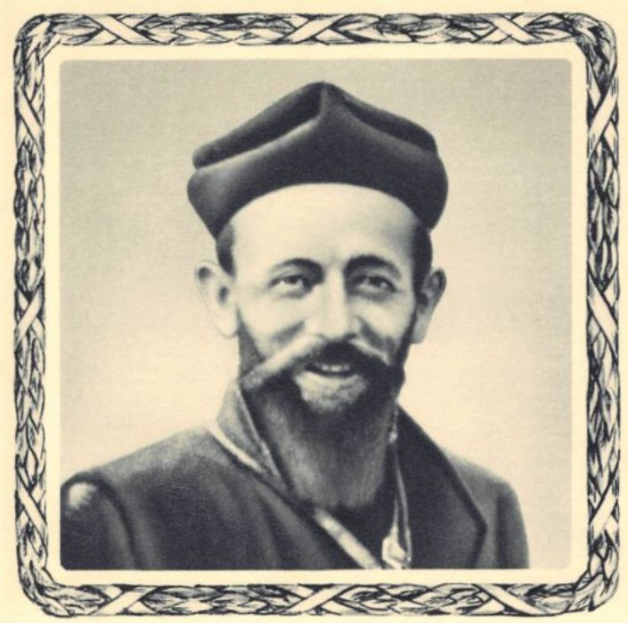
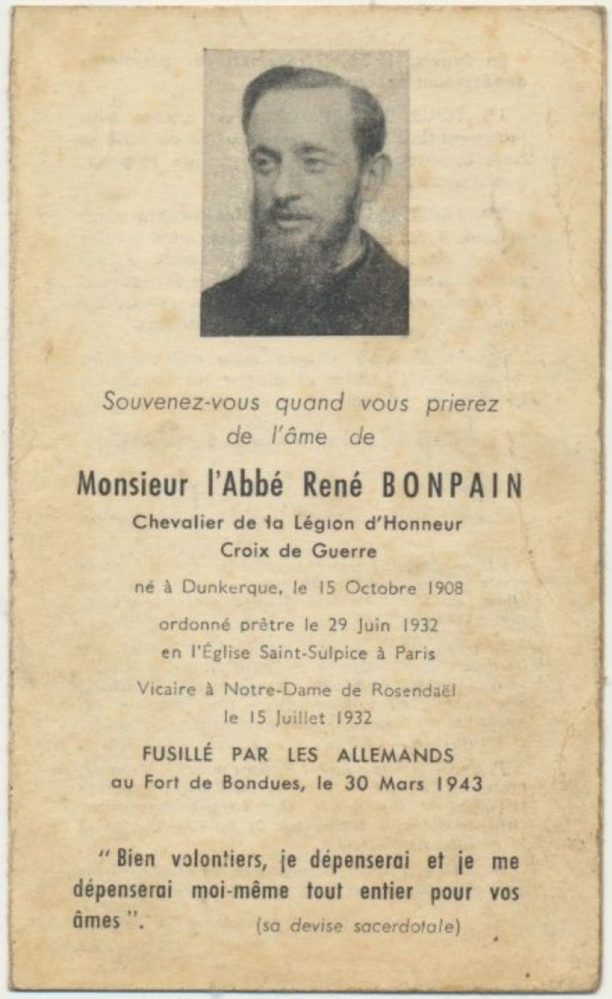
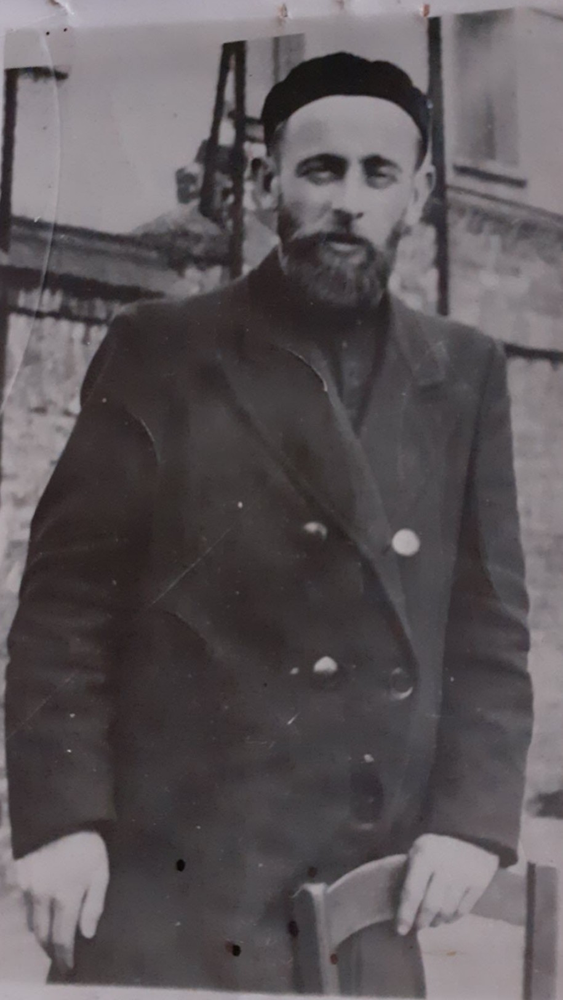
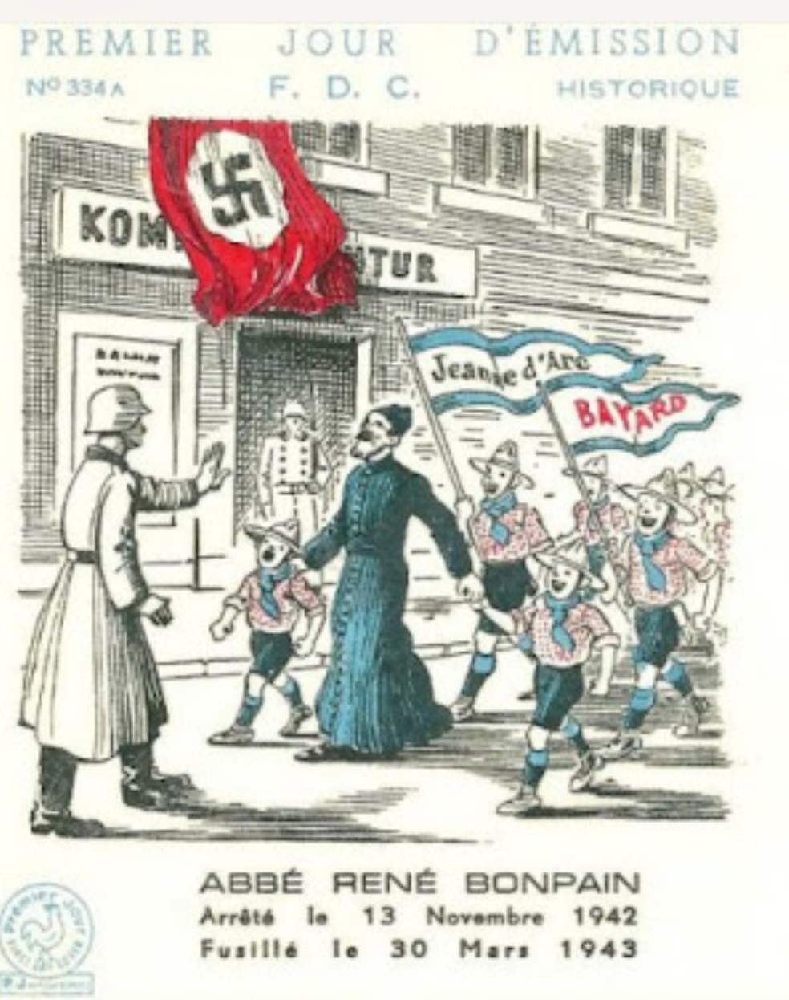

Né à Dunkerque le 15 octobre 1908, l’Abbé René Bonpain est l’une des grandes figures de la résistance dans le Nord de la France. Vicaire à Notre‑Dame de Rosendaël, il se distingue par son dévouement auprès des familles, des jeunes et des prisonniers. Arrêté par les Allemands le 13 novembre 1942, il est fusillé au fort de Bondues le 30 mars 1943.

Ce portrait solennel montre un homme calme, déterminé, dont le regard exprime à la fois la douceur du prêtre et la force du résistant. Sa devise sacerdotale — « Bien volontiers, je dépenserai et je me dépenserai moi-même tout entier pour vos âmes » — résume son engagement total au service des autres.
Dès 1932, l’Abbé Bonpain exerce son ministère dans une région meurtrie par la guerre et l’occupation. Il aide les familles éprouvées, soutient les jeunes, accompagne les prisonniers et devient une figure morale essentielle dans un Dunkerque ravagé. Son action dépasse le cadre religieux : elle devient une forme de résistance civile.

La carte souvenir rappelle sa vie, son ministère et son exécution. Chevalier de la Légion d’Honneur, titulaire de la Croix de Guerre, l’Abbé Bonpain est reconnu officiellement pour son courage et son sacrifice. Ce document est aujourd’hui un élément central de la mémoire locale.
Arrêté le 13 novembre 1942, il est accusé d’aider les réseaux de résistance et de soutenir les prisonniers. Son arrestation s’inscrit dans la politique de répression menée par l’occupant contre les figures civiles influentes du Nord.

Ce portrait extérieur, diffusé par les associations mémorielles, montre l’Abbé Bonpain comme un résistant français. Simple, humble, mais déterminé, il incarne la résistance civile, celle des prêtres, des instituteurs, des anonymes qui refusèrent la soumission.

Cette illustration le montre face à un soldat nazi, entouré d’enfants scouts portant les bannières « Jeanne d’Arc » et « Bayard ». Elle symbolise la confrontation entre l’occupant et la résistance morale, spirituelle et patriotique incarnée par le prêtre.
Fusillé au fort de Bondues le 30 mars 1943, l’Abbé René Bonpain est aujourd’hui l’une des figures les plus respectées de la résistance dans le Nord. Son courage, son dévouement et son sacrifice en font un symbole de la lutte contre l’oppression et de la fidélité à l’humanité.